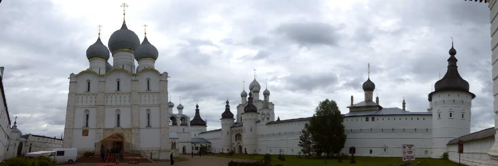
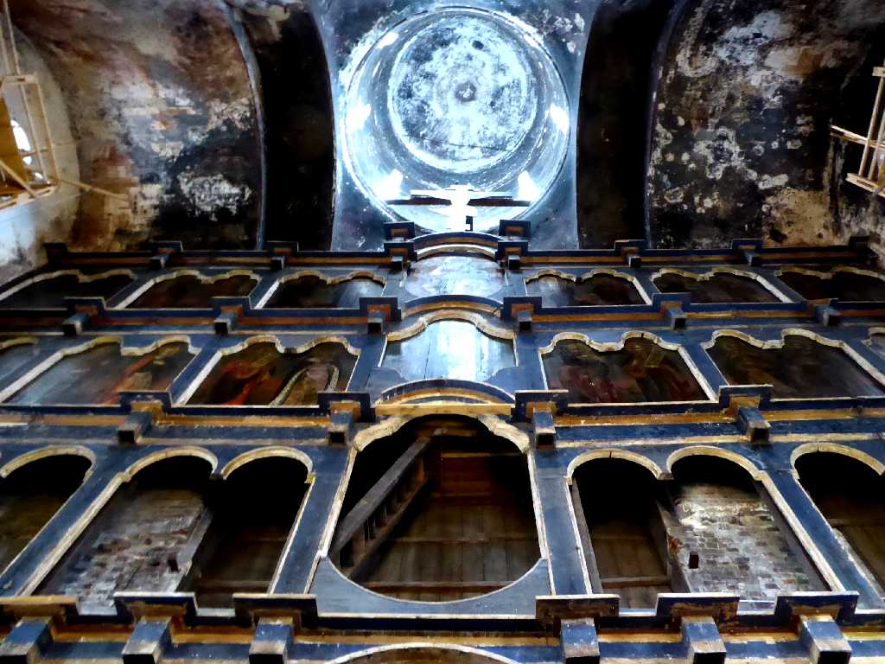
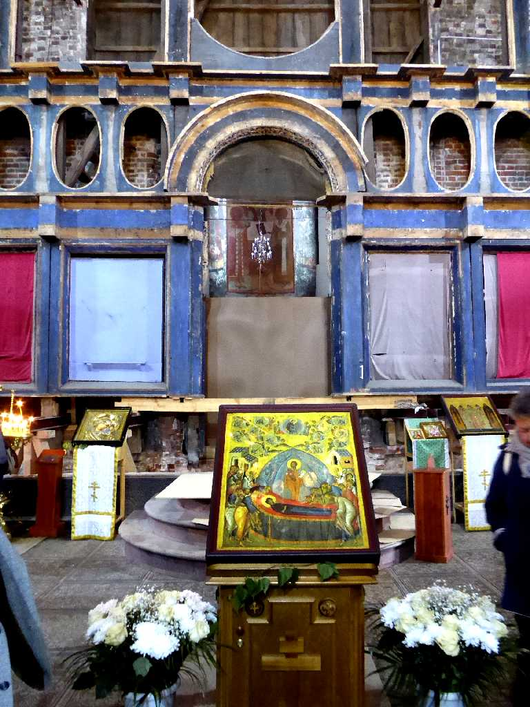
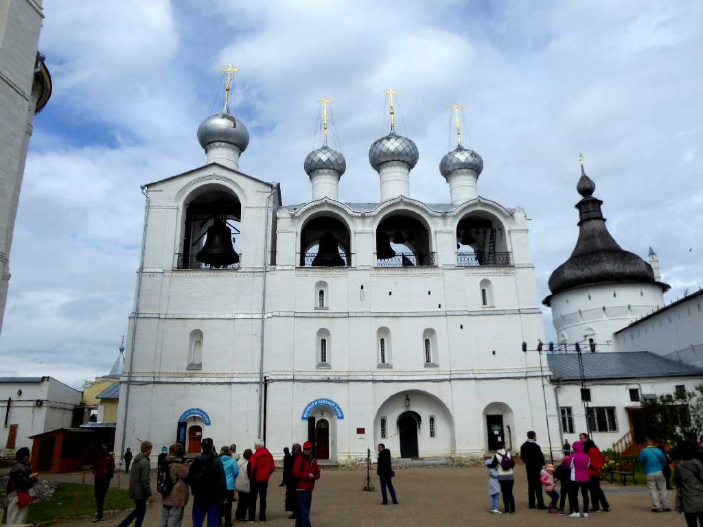
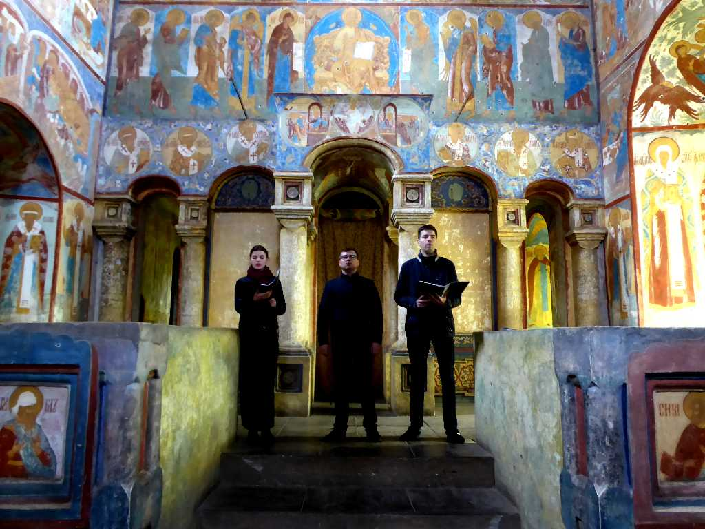
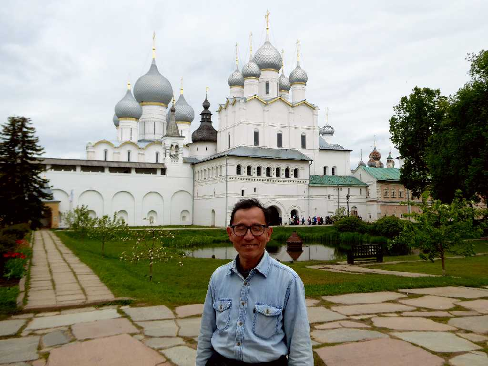
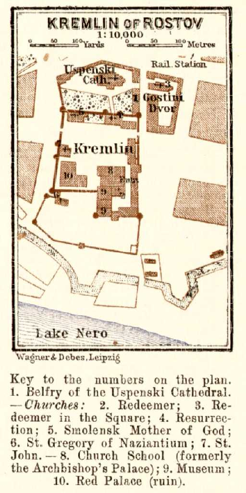

Kremlin Rostov
１２世紀のロストフ公国の中心地として栄えたロストフのクレムリン
Dormition Cathedral Kremlin Rostov
生神女就寝大聖堂

Altar Dormition Cathedral
１０世紀にロシア初期の主教座が置かれたのち１４世紀にはロストフ主教が大主教に格上げされさらに１６世紀には府主教に格上げされたため１７世紀に現在のクレムリンを築いた

Icon Dormition Cathedral

Bell Tower Dormition Cathedral



Chant Kremlin

June 4 2017 Kremlin Rostov
